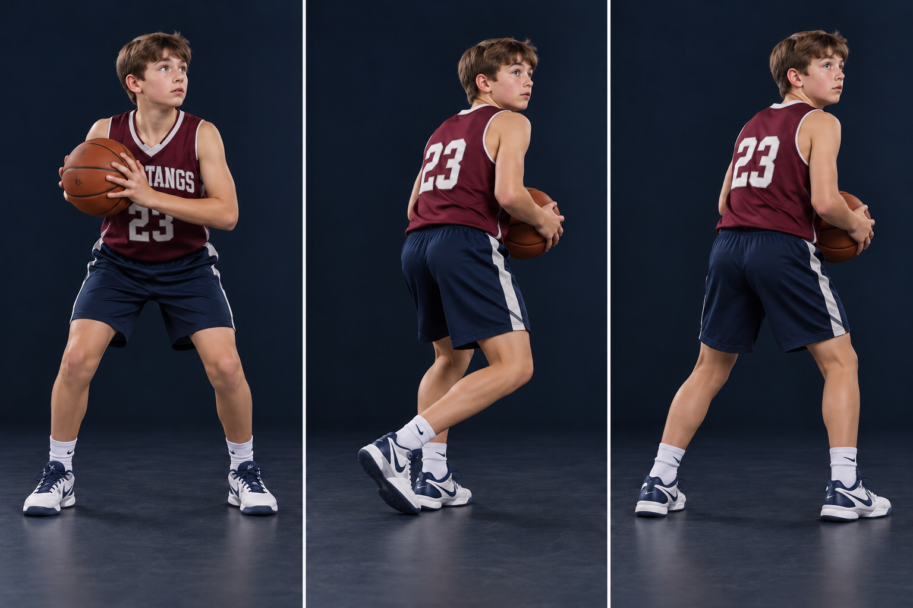

A back pivot is also called a reverse pivot. Your free foot steps backward relative to where you started facing. Use a small, controlled turn to find space and a passing angle. Practice with either foot as the anchor.
PHOTO WALKTHROUGH
Clear stills · one action at a time
3 photo steps

01
Step 1 · Name the pivot foot
STEP 01
Name the pivot foot
Left foot stays in this example.
Start from a stationary two-foot catch. Choose the left foot for this teaching rep, and keep its forefoot on one floor spot.
Bend your knees and hold the ball firmly with two hands. Look at the defender and the open space before turning.
Catch this mistake
Changing pivot feet after the turn has started.
02
Step 2 · Open backward
STEP 02
Open backward
Sweep the right foot low behind you.
Move the right foot backward in an arc. Turn hips and shoulders together around the planted left forefoot. The heel may rotate.
Keep the step low and controlled; do not hop or kick the heel high. Hold the ball on the side away from pressure with elbows close.
Catch this mistake
Dragging the anchor, twisting a knee while the shoe is stuck, or swinging an elbow into space occupied by a defender.
03
Step 3 · Finish ready
STEP 03
Finish ready
Two feet balanced. Head up. Find the next pass.
Set the free foot down with a comfortable base. Keep your body between pressure and the ball.
Read the floor. Pass, shoot, or start a legal dribble if you still have one. A pivot creates an angle; it does not require a full spin.
Catch this mistake
Turning blindly into traffic or picking up and replacing the pivot foot while still holding the ball.
AI-created photo illustrations for teaching body positions. These are separate stills, not slow-motion game footage. Use the written cues and diagrams for movement direction and rules.
The diagram fixes the pivot point and direction. Teal stays; gold moves backward. Mirror the action to practice the other foot. Start with a comfortable quarter-turn.
ANCHOR → OPEN BACK → BALANCE
KEEP IT LEGAL
Know the boundary
For this drill, catch while standing with both feet down. Once one foot lifts, the other is your pivot. Turn on that spot; do not drag it or switch feet. To start a dribble, release the ball BEFORE lifting the pivot foot. To pass or shoot, you may lift it, but release before it returns to the floor. If you jump to pass or shoot, release before either foot lands. After ending a dribble, you cannot start another one.
TRY IT AT PRACTICE
Start slow, then add a read
Put a small tape dot under the left forefoot. Make 5 slow quarter-turns backward and pass to a partner. Reset after each rep, then repeat with the right foot. Add a passive defender who shows which side is pressured.
Ask yourself
Which foot is my anchor, and did it stay on its spot?
Coaching references & teaching notes
These are team teaching adaptations. Sources support the principles; the AI-created illustrations are not official rules diagrams or endorsements. Check your event’s local rules with the coach.